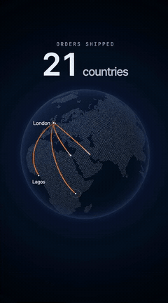

01
Globe arcs
Globo de puntos que gira; arcos de luz salen de una ciudad mientras un contador sube.
Ideal para alcance geográfico, envíos, clientes por país.
Cómo se hace: Prompt base 01
Pídelo así: «Animación globe arcs: envíos desde Bogotá a 12 países»